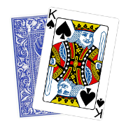

Linear is a term to descibe the function as a first-degree polynomial.
Congruential is term to describe that a modulus is used to bound the output to some domain.
Generator is a term to decribe the fact to function can be called iteratively.
// Construct a psuedo-random generator
function create_lcg(m, a, c, seed) {
return function() {
var next = (a * seed + c) % m;
seed = next;
return (next / m);
}
}
Using that RNG to build a sequence of random numbers looks like this:
// Construct a psuedo-random sequence var rng = create_lcg(0x80000000, 65539, 0, 1); rng() // 1-st number rng() // 2-nd number ... rng() // n-th number
|
|
|
mask = 0x1FFFFFF |
mask = 0x7FFFFF |
return( ((ptd->_holdrand = ptd->_holdrand * 214013L 2531011L) >> 16) & 0x7fff );VCRT msvcrt.dll:
mov ecx, [eax+14h] imul ecx, 343FDh add ecx, 269EC3h mov [eax+14h], ecx mov eax, ecx shr eax, 10h and eax, 7FFFh
|
| TODO full cycle |
| TODO | How To Predict Congruential Generators |
| http://www.cigital.com/papers/download/developer_gambling.php |  |